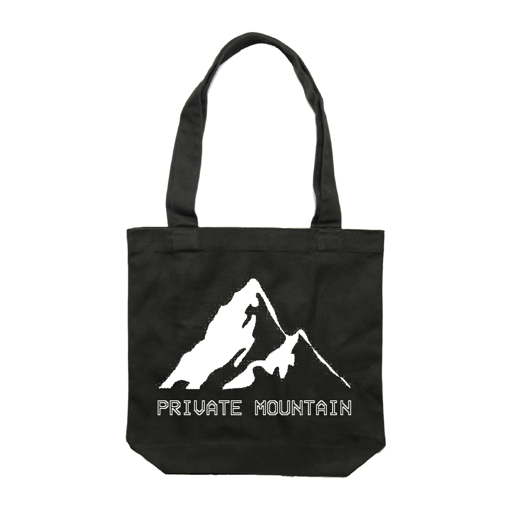
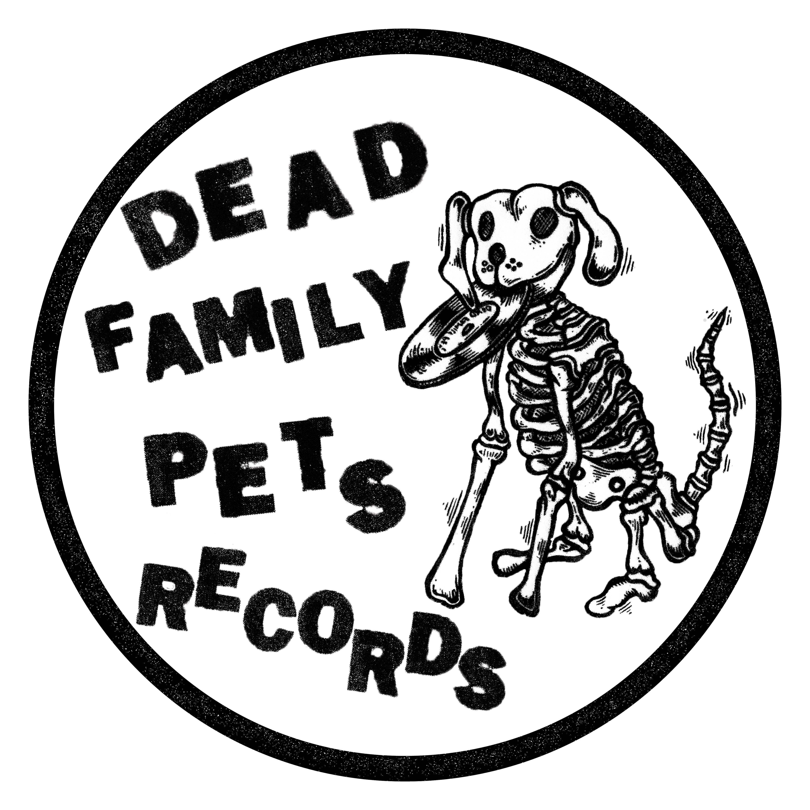

SAGE GREEN AND WHITE TOTE BAG DESIGN
For Private Mountain's merchandise I designed some tote bag designs. The design for the tote bags conveys a clean yet simple design drawing on the band's existing VHS/glitchy aesthetic, translated to a physical tote bag.
All tote bags were printed by
Sound Merch

BLACK AND WHITE TOTE BAG DESIGN
For Private Mountain's tote bags I created a mountain graphic and experimented with different textures to produce the final outcome being a glitchy looking mountain one would see on an old CRT TV screen.
All tote bags were printed by
Sound Merch

COUCHDOG COLLECTIVE LOGO
For Melbourne artist collective Couchdog Collective, I went for a more illustrative type design consisting of dogs forming each letter of the logo to create a playful and more visually expressive logo to suit the style of content Couchdog Collective produces.

WEATHER VANE RECORDS LOGO
This was a really fun brief working with a few simple but effective colours, a fun hand drawn graphic and generally taking on a more hands-on approach with initial sketches and experimenting with textures for the final design.
Go check out
Weather Vane Records and maybe even buy a 7" or a tape?
The Pocket - Promotional Social Media Tiles
The purpose of each social media tile is to promote the DJs and artists for Miscellaneous Fuzz's social media event posts.
The Pocket - Promotional Social Media Tiles
All designs were produced with a high threshold in Photoshop and the artists names were all created with hand stamped lettering. All letters were cut out from thick cardboard material and hand pressed with black ink to paper then scanned to capture the texture of the paper, ink and cardboard letters. The scanned text was then laid out with the high threshold images on InDesign.

DFPR STICKERS
My logo redesign for 'Dead Family Pets Records' has been translated into both digital use for the record label's website and social media, as well as for print purposes. This project was a really exciting opportunity for me as a designer, to use both my typography and layout skills coupled with my strong passion and interest in Melbourne's independent music scene.

LOGO REDESIGN
I redesigned a logo for a small indepedent Melbourne record label called 'Dead Family Pets Records'. The client asked for a clearer and more legibile redesigned logo. I used their existing typography and dog graphic and I revamped the composition and legibility of the logo, while maintaining a strong DIY aesthetic.

AT PEACE PANORAMA EP COVER
For Melbourne instrumentalist Dune Peaks, I designed his second EP cover 'At Peace Panorama'.
My design draws on Gareth's atmospheric and serene recordings translating his uplifting and immersive sounds visually through a brightly coloured and washed out looking EP cover design.
Listen
here to the EP.
Photo taken by Gareth Holloway.

SHADOWPLAY - Shot on PENTAX K10D - 2018

MELBOURNE CURVES - Canon EOS 550D - 2018

FOLEY MAGAZINE EVENT A3 POSTER
The A3 poster was designed with a simple but heavy psychedelic aesthetic, similar to the aesthetic of Foley Magazine's 3rd edition of their magazine that the event launch was for.
The client was happy with how “efficient” I was and that I was able to capture their vision perfectly.

PRIVATE MOUNTAIN SINGLE LAUNCH POSTER
I designed an A3 poster to be printed for Private Mountain's single launch at the Worker's Club. I drew on the VHS aesthetic of their '22' single cover design, using for brand consistency the same VHS typeface for the final design.
DUNE PEAKS EP COVER
The design for 'Eventide and the next light' draws on the soundscapes and sonics of slick drums, bass grooves and washed-out guitar lines sunk in a sea of reverb. I went for a bold, low-fi aesthetic to visually reflect the tone and feel of the EP.
My design process consisted of photographing a local beach landscape and experimenting with a halftone bitmap image effect and finding a suitable typeface (in this case Schmalfette) that worked well with the cover design.

PRIVATE MOUNTAIN '22' SINGLE COVER DESIGN
For my internship for Push Records (The Push Inc) I designed a single cover for online streaming services for an upcoming Melbourne based band Private Mountain. I collaborated with a videographer in the team, who created the glitchy visual to create this minimal design conveying a strong VHS aesthetic.
Listen
here to the single.

CLIFF'S EDGE - Shot on PENTAX K10D - 2018

SEASCAPE - Shot on PENTAX K10D - 2018

MELBOURNE SCOOTER WAREHOUSE LOGO
New logo design for a Mornington Peninsula based motor scooter retail showroom and ecommerce website
'Melbourne Scooter Warehouse'. The logo was designed with the intention of communicating the idea of motor scooters with the circular design paying homage to both vintage and modern scooter headlights.

BONBEACH - Shot on PENTAX K10D - 2017

MELBOURNE - Shot on Canon EOS 550D - 2017

MAP OF MELBOURNE ARCHITECTURE
This print based brief asked for a design of a Melbourne City guide that you would not typically find at a visitor's centre in Melbourne. I chose to design my map on Melbourne's iconic city architecture. All images are my own and information was all sourced online.

SPACE ODYSSEY BOOK COVERS
The book covers were created for a print project around redesigning book covers from a famous book series. I chose Arthur C. Clarke’s ‘Space Odyssey’ book series. I experimented with cutting images from old National Geographic magazines to produce a surreal sci-fi aesthetic to the book covers to visually communicate the surreal and sci-fi aesthetic of the book.

MAP OF MELBOURNE ARCHITECTURE
I designed my city guide with a minimal aesthetic to give attention to both the photography and map. I used a bold typeface as an ode to the depicted architecture. I printed my map on a thicker paper stock, so that the map can be continuously folded and unfolded without it easily tearing. The map folds down to palm size, making it easy for users to carry and use.

SPACE ODYSSEY BOOK COVERS
The book covers were printed on a thick glossy matte paper stock. This gives the book cover weight, so it wouldn’t tear when placed on a physical book. This also gives the artwork a glossy look reinforcing the idea of space and the surreal nature and aesthetic of my designs.

TYPE SETTING IN DYMO
I created an A2 sized black and white poster which was entirely designed and 'type set' with a Dymo label maker to produce 100 words of ‘type-set’ text. This poster is communicating the limitations and inconsistencies of the Dymo label and label maker, with a strong punk aesthetic.
My poster is also exploring the idea of subcultures in the 1970s that used the Dymo to produce their own art and rebellious designs. These subcultures informally undertook the role as the graphic designer by moving away from only using the Dymo label in a business and domestic context.
SOCIAL MEDIA
For Melbourne Scooter Warehouse I designed various graphics and designs for their social media collateral.
MOBILE WEBSITE DESIGN
For Melbourne Scooter Warehouse I designed their new eCommerce website to be optimised for both desktop and mobiel screens. The user expereince and ease of purchasing motor scotters and motor scooter accessories was paramount with legibility and clean design being the secondary priority.
Click
here to visit the website.
PRINT
PHOTOGRAPHY
CLIENT WORK